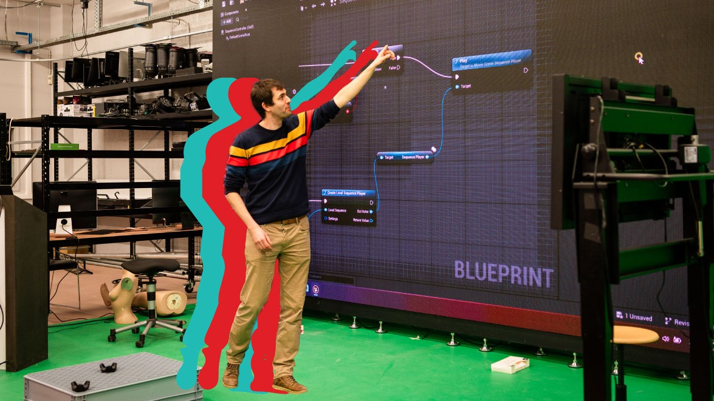

Vakken
1ste jaar
In het eerste jaar beginnen we met de algemene vakken zoals:
Coding

Duik in de wereld van code en ontwikkel interactieve ervaringen. Je leert programmeren voor web, apps en games, met technologieën zoals HTML, CSS, JavaScript, en meer. Ontdek hoe je jouw technische skills inzet om creatieve ideeën tot leven te brengen.
Design
Van visuele communicatie tot gebruiksvriendelijke interfaces, design is de kern van alles wat je maakt. Leer hoe je krachtige visuals ontwerpt, UX/UI-principes toepast en creativiteit combineert met functionaliteit om ontwerpen te maken die indruk maken.
Motion
Breng beelden tot leven met motion graphics, animaties en video. Je ontdekt hoe beweging verhalen versterkt, emoties oproept en impact creëert. Van 2D-animatie tot geavanceerde motion design – dit is waar creativiteit echt gaat stromen.
2de jaar
In het tweede krijgt je dezelfde vakken met daarbij nog extra keuze vakkken.
XR & 3D
Ontwerp je eigen wereld
Het keuzetraject XR & 3D biedt studenten een diepgaande opleiding in Virtual Reality (VR), Augmented Reality (AR), Mixed Reality (MR) en 3D-contentcreatie. Je ontwikkelt zowel technische als creatieve skills om meeslepende ervaringen te ontwerpen, van interactieve XR-toepassingen en real-time 3D-modellen tot complexe wereldopbouw en gebruikersonderzoeken. Door praktijkgericht te leren werken met toonaangevende software en hardware, ben je klaar voor innovatieve rollen zoals XR-ontwikkelaar, 3D-content creator of immersieve UX-designer.
Experience design
Breng verhalen tot leven
Het keuzetraject Experience Design bereidt je voor om meeslepende en interactieve ervaringen te creëren voor de evenementen-, cultuur- en marketingsector. Je ontwikkelt sterke vaardigheden in conceptontwikkeling, 2D/3D-visualisatie, en prototyping, met expertise in zowel soft-ware als hardware, zoals AV-technologie, sensoren en creative coding. Door te werken met tools als Touch-Designer, Unreal, en Mad-mapper leer je abstracte ideeën om te zetten in immersieve ervaringen die je publiek op een unieke manier betrekken.
Web & Mobile
Creër de toekomst van digitale ervaringen
Het keuzetraject Web & Mobile bereidt je voor op een carrière als front-end, back-end of mobile developer met uitgebreide vaardigheden in moderne frameworks en tools. Van data-driven web applicaties tot storytelling in een browser of mobiel toestel, je combineert je solide technische en design basis om de volgende generatie van online ervaringen neer te zetten.
Digital Design
Design met impact
Het keuzetraject Digital Design biedt je de kans om uit te blinken als eigenzinnige ontwerper, van visual- en motion- tot UX-designer. Je leert probleemoplossend en cross-mediaal denken, waarbij zowel het proces als de gebruiker centraal staan. Door visueel onderzoek ontwikkel je een eigen stijl en ontwerpvisie. Of je nu digitale verhalen, social-mediacampagnes of immersieve websites creërt, je verwerft de vaardigheden om grensverleggende oplossingen te realiseren.

3de jaar
Communication III
Design V
Development V
Grow III
Expert Lab
Final Work
Intership